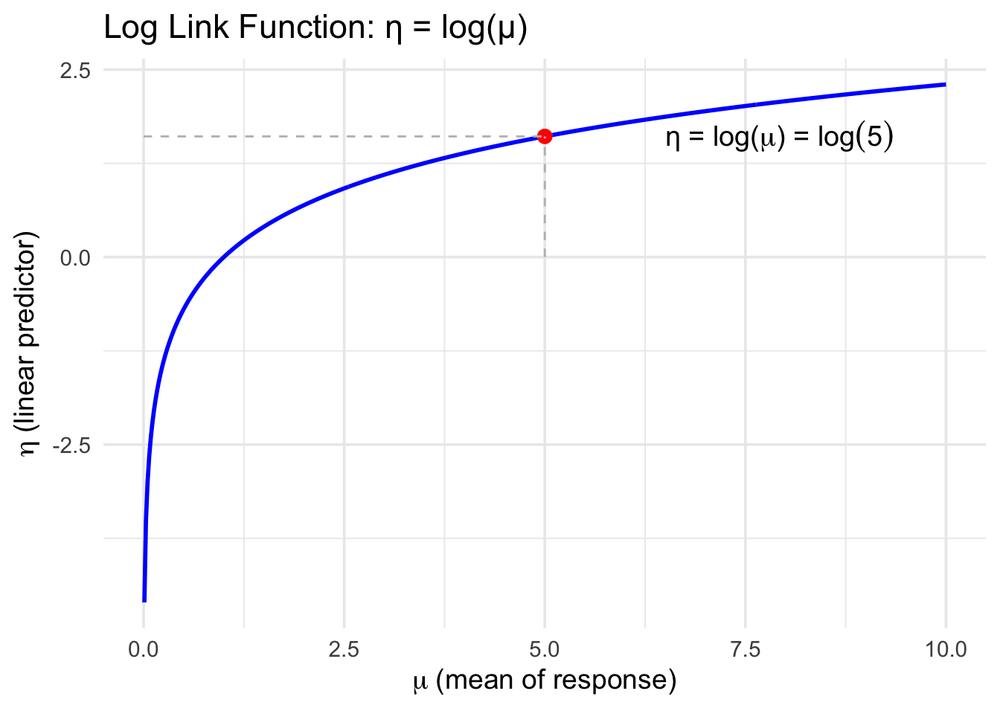
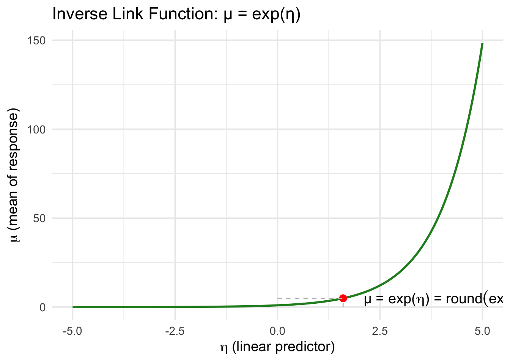

I. Modelling processes that evolve randomly over time
Welcome to the soft introduction into Poisson modelling in R!
Many things in life can be modeled with the poisson process as it quite literally models the long-term average rate of which random events occur independently. Its subjectively the most widely used model of a point process in time, and is suitable for modelling frequencies and probabilities.
Examples of events that can be modeled by the poisson distribution
The frequency of goals scored by a team in a soccer match
The probability two teams will score no goals in a soccer match
The frequency of inbound calls to a call center
The probability you receive 10 calls in one hour to a call center
The frequency of unique visitors to a website
The probability you receive 5 unique visitors to a website in 30 minutes
The frequency walk-in arrivals to a physical location (customers or patients)
The probability you receive 30 walk-in arrivals to a physical location in 2 hours.
The frequency of volcanic eruptions
The probability there will be 2 volcanic eruptions in the next 10 years.
All of these scenarios have the following in common which allow us to describe the response:
Response is discrete
Response is right skewed (but approaches a normal distribution as mu increases
Bounded between 1 and infinity.
Variance increases with the mean.
II. Synthesis of the poisson model
💡 Key Takeaways:
Poisson Log Link: Ensures predicted values are +ve.
Logistic Logit Link: Logit is between -inf to inf. exp() ensures predicted values are bound by 0 and 1.
Now that we’ve introduced what kinds of real-world phenomena follow a Poisson distribution, from soccer goals to volcanic eruptions, you might be wondering, “How do we actually use this knowledge to build a statistical model?”
In classical linear regression, we assume the response has an unbounded continuous range. That works fine when you’re predicting, say, someone’s income or weight. But in Poisson regression, we model counts… things like number of visitors, arrivals, or events, situations where negative values make no sense.
So, instead of the standard form: \(\mu_i = \beta_0 + \beta_1 x_i\), we apply a loglink function to ensure our expected value, \(\mu_i\), is always positive. After all, a negative number of customer walk-ins? That might get you fired 😅
🔗 Enter the Log Link
To fix this, the Poisson GLM uses a **log link function**, which transforms the expected value onto the real number line:
And because of the log transformation, we interpret coefficients multiplicatively…
The two plots below help visualize how the Poisson model transforms values using a log link. The log ensures the model stays linear on the log scale, while the exponential ensures predictions for the mean response, μ, are always positive.
The log link function transforms expected counts \(\mu\) (which must be ≥ 0) into linear predictors η on the real number line.
Code
library(tidyverse)# Plot 1: Log Link Function η = log(μ)mu <-seq(0.01, 10, length.out =500)eta_from_mu <-log(mu)df1 <-data.frame(mu = mu, eta = eta_from_mu)# Add a point to highlight transformationhighlight1 <-data.frame(mu =5, eta =log(5))ggplot(df1, aes(x = mu, y = eta)) +geom_line(color ="blue", linewidth =1) +geom_point(data = highlight1, aes(x = mu, y = eta), color ="red", size =3) +geom_segment(data = highlight1,aes(x = mu, xend = mu, y =0, yend = eta),linetype ="dashed", color ="gray" ) +geom_segment(data = highlight1,aes(x =0, xend = mu, y = eta, yend = eta),linetype ="dashed", color ="gray" ) +geom_text(data = highlight1,aes(x = mu +1.5, y = eta),label =expression(paste("η = log(", mu, ") = ", log(5))),hjust =0, size =5 ) +labs(title ="Log Link Function: η = log(μ)",x =expression(mu ~"(mean of response)"),y =expression(eta ~"(linear predictor)") ) +theme_minimal(base_size =14)

Conversely, The inverse link function (exp) transforms any linear predictor η back into a valid, positive expected count.
Code
# Plot 2: Inverse link function (exp)eta <-seq(-5, 5, length.out =500)mu_from_eta <-exp(eta)df2 <-data.frame(eta = eta, mu = mu_from_eta)# Highlight a pointhighlight2 <-data.frame(eta =1.6, mu =exp(1.6))ggplot(df2, aes(x = eta, y = mu)) +geom_line(color ="forestgreen", linewidth =1) +geom_point(data = highlight2, aes(x = eta, y = mu), color ="red", size =3) +geom_segment(data = highlight2,aes(x = eta, xend = eta, y =0, yend = mu),linetype ="dashed", color ="gray" ) +geom_segment(data = highlight2,aes(x =0, xend = eta, y = mu, yend = mu),linetype ="dashed", color ="gray" ) +geom_text(data = highlight2,aes(x = eta +0.5, y = mu),label =expression(paste("μ = exp(", eta, ") = ", round(exp(1.6), 1))),hjust =0, size =5 ) +labs(title ="Inverse Link Function: μ = exp(η)",x =expression(eta ~"(linear predictor)"),y =expression(mu ~"(mean of response)") ) +theme_minimal(base_size =14)

III. Explanatory Terms, and Interpretation
💡 Key Takeaways:
Holding all over variables constant, for every n-unit increase in X, the expected value of the response in multiplied by exp(nB1)
\(\log(\mu) = \beta_0 + \beta_1 x\)
\(\mu = e^{\beta_0 + \beta_1x}\)
\(=e^{\beta_0} (e^{\beta_1})^x\)
- When \(x = 0\), the expected value equals \(\exp(\beta_0)\).
- For every one-unit increase in \(x\), the expected value of the response is multiplied by \(\exp(\beta_1)\).
- For every ten-unit increase in \(x\), the expected value of the response is multiplied by \(\exp(10 \beta_1)\).
- For every \(n\)-unit increase in \(x\), the expected value of the response is multiplied by \(\exp(n \beta_1)\).
IV. Parameter Estimation for Generalised Linear Models
💡 Key Takeaways:
GLMs: Maximise the log-likelihood
Maximum Log-Likelihood
As the LSE does not accommodate for increases in variance (and therefore needs to adjust weighting for the residuals), we use the maximum likelihood function. We aim to choose coefficients that provide the highest possible log-likelihood.
To calculate the likelihood function…
Calculate the probability of observing the observations response
Take the product of these probabilities
\(\ell = \log(L) = \sum_{i=1}^{n} \log \left[ f(y_i; \boldsymbol{\beta}) \right], \ where \ f(y_i; \boldsymbol{\beta}) \ is \ the \ pmf \ of \ the \ assumed \ response \ distribution\)
V. Deviance as a Goodness of Fit
💡 Key Takeaways:
Parameter estimation is achieved by minimising the deviance
1 - pchisq(residuals, df) should be large if our model is correct.
Source Code
---title: "Introduction to Poisson Modelling"author: "Brittany Alexandra"date: "`r Sys.Date()`"format: html: theme: cerulean toc: true toc-depth: 2 toc-location: left code-fold: true code-tools: trueeditor_options: markdown: wrap: 72---# I. Modelling processes that evolve randomly over time------------------------------------------------------------------------```{r, include= FALSE, warning= FALSE, echo= FALSE}knitr::opts_chunk$set(warning =FALSE, message =FALSE)```Welcome to the soft introduction into Poisson modelling in R!Many things in life can be modeled with the poisson process as it quiteliterally models the long-term average rate of which random events occurindependently. Its subjectively the most widely used model of a pointprocess in time, and is suitable for modelling *frequencies* andprobabilities*.*\n[Examples of events that can be modeled by the poissondistribution]{.underline}- The frequency of goals scored by a team in a soccer match- The probability two teams will score no goals in a soccer match- The frequency of inbound calls to a call center- The probability you receive 10 calls in one hour to a call center- The frequency of unique visitors to a website- The probability you receive 5 unique visitors to a website in 30 minutes- The frequency walk-in arrivals to a physical location (customers or patients)- The probability you receive 30 walk-in arrivals to a physical location in 2 hours.- The frequency of volcanic eruptions- The probability there will be 2 volcanic eruptions in the next 10 years.\n[All of these scenarios have the following in common which allow us todescribe the response:]{.underline}- Response is discrete- Response is right skewed (but approaches a normal distribution as mu increases- Bounded between 1 and infinity.- Variance increases with the mean.\n# II. Synthesis of the poisson model------------------------------------------------------------------------::: callout-note## 💡 Key Takeaways:1. **Poisson Log Link**: Ensures predicted values are +ve.2. **Logistic Logit Link**: Logit is between -inf to inf. exp() ensures predicted values are bound by 0 and 1.:::Now that we've introduced what kinds of real-world phenomena follow aPoisson distribution, from soccer goals to volcanic eruptions, you mightbe wondering, "How do we actually use this knowledge to build astatistical model?"In classical linear regression, we assume the response has an**unbounded continuous range**. That works fine when you're predicting,say, someone's income or weight. But in **Poisson regression**, we model**counts**... things like number of visitors, arrivals, or events,situations where negative values make no sense.So, instead of the standard form: $\mu_i = \beta_0 + \beta_1 x_i$, weapply a **log** **link function** to ensure our expected value, $\mu_i$,is always **positive**. After all, a negative number of customerwalk-ins? That might get you fired 😅\n[**🔗 Enter the Log Link**]{.underline}To fix this, the Poisson GLM uses a \*\*log link function\*\*, whichtransforms the expected value onto the real number line:$\log(\mu_i) = \beta_0 + \beta_1 x_i \quad \Rightarrow \quad \mu_i = \exp(\beta_0 + \beta_1 x_i)$[This transformation has two key benefits:]{.underline}- \- $\mu_i$ can never be negative- \- The model remains linear \*\*on the log scale\*\*And because of the log transformation, we interpret coefficients**multiplicatively**...\nThe two plots below help visualize how the Poisson model transformsvalues using a **log link**. The log ensures the model stays linear onthe log scale, while the exponential ensures predictions for the meanresponse, μ, are always positive.The **log link function** transforms expected counts $\mu$ (which mustbe ≥ 0) into linear predictors η on the real number line.```{r}library(tidyverse)# Plot 1: Log Link Function η = log(μ)mu <-seq(0.01, 10, length.out =500)eta_from_mu <-log(mu)df1 <-data.frame(mu = mu, eta = eta_from_mu)# Add a point to highlight transformationhighlight1 <-data.frame(mu =5, eta =log(5))ggplot(df1, aes(x = mu, y = eta)) +geom_line(color ="blue", linewidth =1) +geom_point(data = highlight1, aes(x = mu, y = eta), color ="red", size =3) +geom_segment(data = highlight1,aes(x = mu, xend = mu, y =0, yend = eta),linetype ="dashed", color ="gray" ) +geom_segment(data = highlight1,aes(x =0, xend = mu, y = eta, yend = eta),linetype ="dashed", color ="gray" ) +geom_text(data = highlight1,aes(x = mu +1.5, y = eta),label =expression(paste("η = log(", mu, ") = ", log(5))),hjust =0, size =5 ) +labs(title ="Log Link Function: η = log(μ)",x =expression(mu ~"(mean of response)"),y =expression(eta ~"(linear predictor)") ) +theme_minimal(base_size =14)```Conversely, The **inverse link function** (exp) transforms any linearpredictor η back into a valid, positive expected count.```{r}# Plot 2: Inverse link function (exp)eta <-seq(-5, 5, length.out =500)mu_from_eta <-exp(eta)df2 <-data.frame(eta = eta, mu = mu_from_eta)# Highlight a pointhighlight2 <-data.frame(eta =1.6, mu =exp(1.6))ggplot(df2, aes(x = eta, y = mu)) +geom_line(color ="forestgreen", linewidth =1) +geom_point(data = highlight2, aes(x = eta, y = mu), color ="red", size =3) +geom_segment(data = highlight2,aes(x = eta, xend = eta, y =0, yend = mu),linetype ="dashed", color ="gray" ) +geom_segment(data = highlight2,aes(x =0, xend = eta, y = mu, yend = mu),linetype ="dashed", color ="gray" ) +geom_text(data = highlight2,aes(x = eta +0.5, y = mu),label =expression(paste("μ = exp(", eta, ") = ", round(exp(1.6), 1))),hjust =0, size =5 ) +labs(title ="Inverse Link Function: μ = exp(η)",x =expression(eta ~"(linear predictor)"),y =expression(mu ~"(mean of response)") ) +theme_minimal(base_size =14)```# III. Explanatory Terms, and Interpretation------------------------------------------------------------------------::: callout-note## 💡 Key Takeaways:Holding all over variables constant, for every n-unit increase in X, theexpected value of the response in multiplied by exp(nB1):::$\log(\mu) = \beta_0 + \beta_1 x$$\mu = e^{\beta_0 + \beta_1x}$$=e^{\beta_0} (e^{\beta_1})^x$\- When $x = 0$, the expected value equals $\exp(\beta_0)$.\- For every **one-unit** increase in $x$, the expected value of theresponse is multiplied by $\exp(\beta_1)$.\- For every **ten-unit** increase in $x$, the expected value of theresponse is multiplied by $\exp(10 \beta_1)$.\- For every $n$**-unit** increase in $x$, the expected value of theresponse is multiplied by $\exp(n \beta_1)$.# IV. Parameter Estimation for Generalised Linear Models------------------------------------------------------------------------::: callout-note## 💡 Key Takeaways:GLMs: Maximise the log-likelihood:::**Maximum Log-Likelihood**As the LSE does not accommodate for increases in variance (and thereforeneeds to adjust weighting for the residuals), we use the maximumlikelihood function. We aim to choose coefficients that provide thehighest possible log-likelihood.[To calculate the likelihood function...]{.underline}1. Calculate the probability of observing the observations response2. Take the product of these probabilities $\ell = \log(L) = \sum_{i=1}^{n} \log \left[ f(y_i; \boldsymbol{\beta}) \right], \ where \ f(y_i; \boldsymbol{\beta}) \ is \ the \ pmf \ of \ the \ assumed \ response \ distribution$# V. Deviance as a Goodness of Fit------------------------------------------------------------------------::: callout-note## 💡 Key Takeaways:1. Parameter estimation is achieved by minimising the deviance2. The more variance, the larger the deviance.3. Increasing model complexity always decreases RSS (LR) / increases MLE (GLM)4. Ds ≤ D ≤ Dn5. 1 - pchisq(residuals, df) should be large if our model is correct.:::